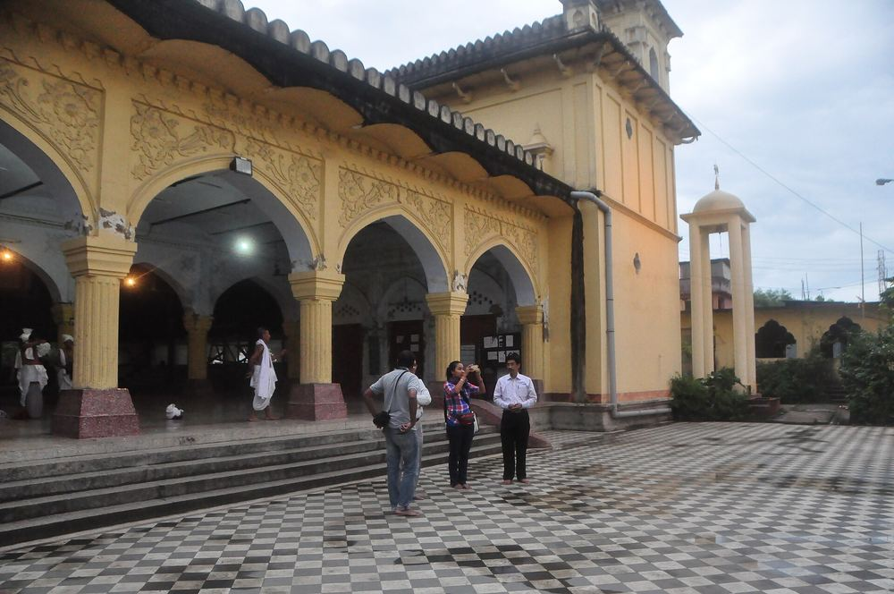
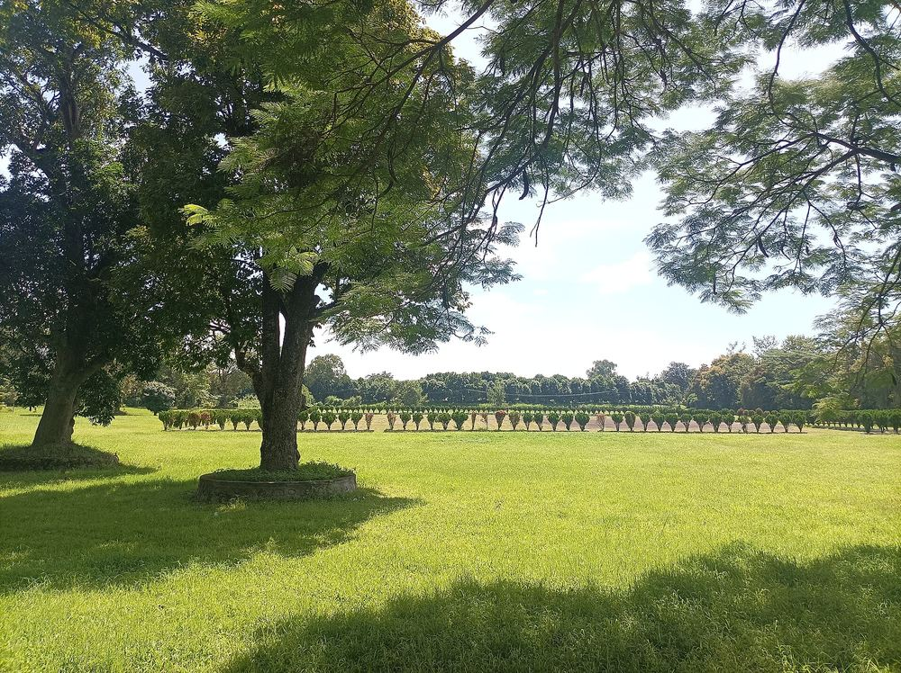
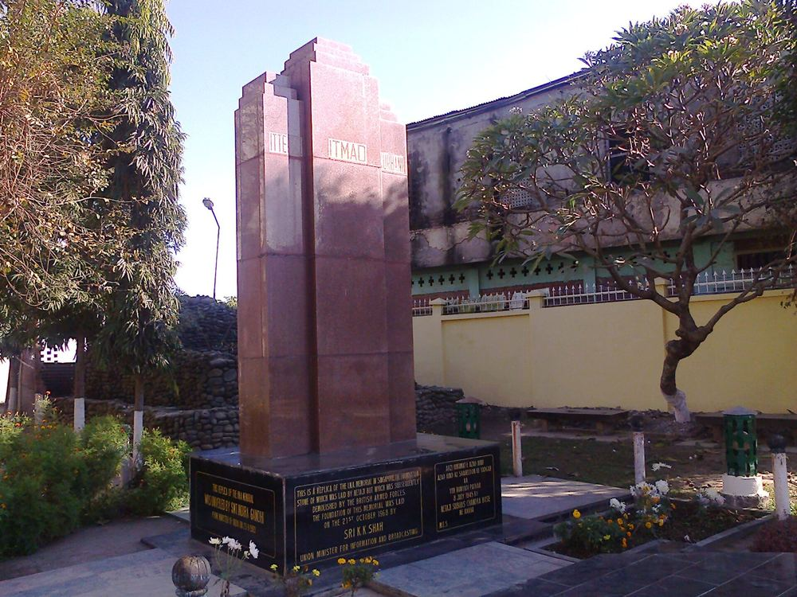
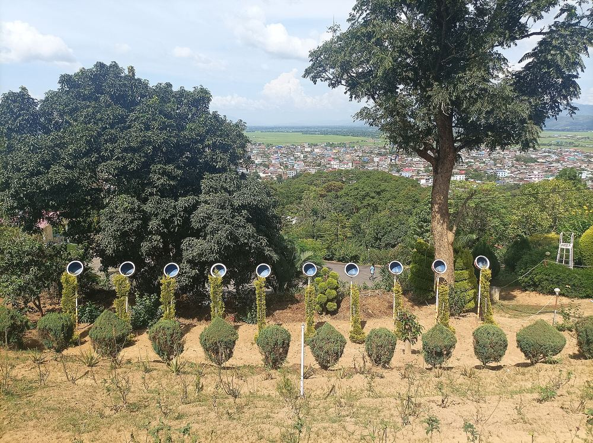
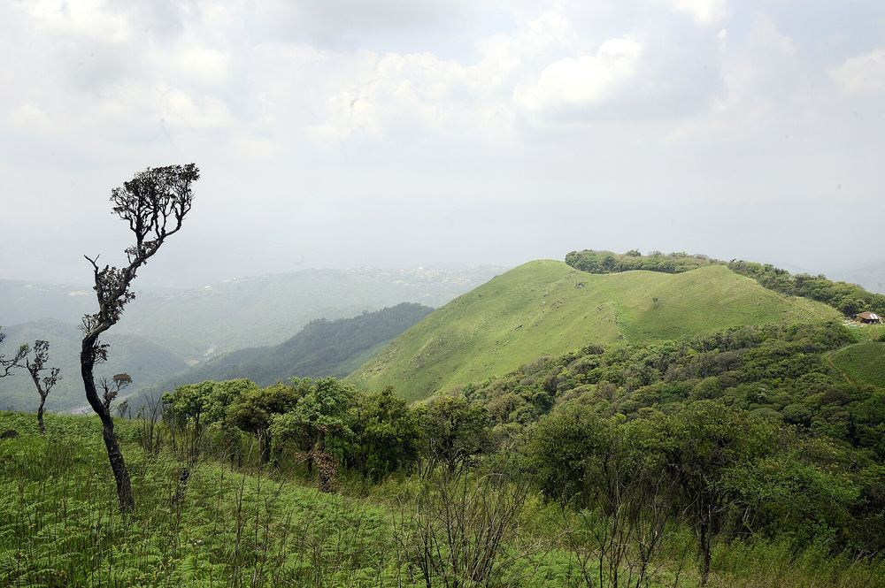
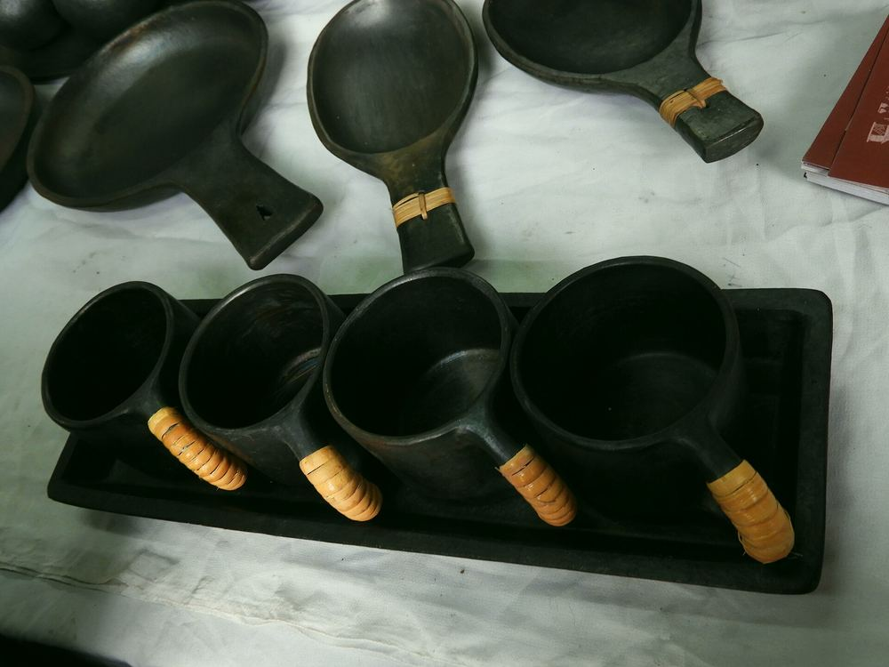
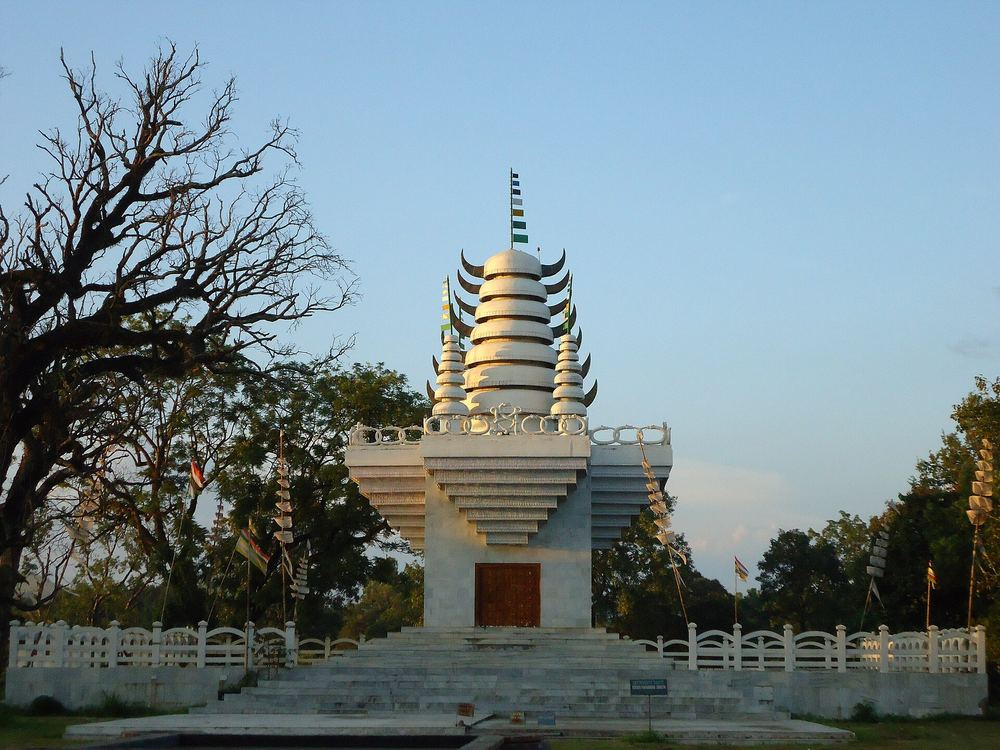
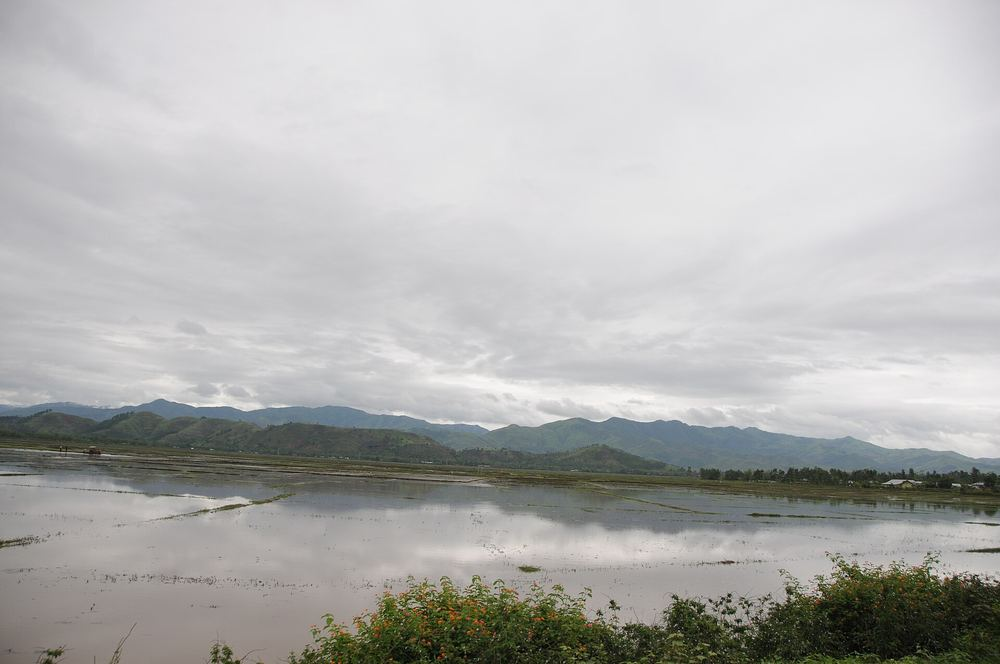

Places
Fourteen places across the valley and the hills, from the floating park on Loktak to the peak where the Shirui lily grows.

Find your way
Tap a place to fly to it. Most of the valley is within two hours of Imphal; the hills need a night or two.
The interactive map needs an internet connection. Every place is listed alongside and below.
Every place, up close
Filter by what you love, then open a place for the time it takes, when to go and how to get there.

Kangla Fort
Imphal West
Open details
Ima Keithel
Khwairamband, Imphal
Open details
Shree Govindajee Temple
Imphal East
Open details
Polo grounds of Imphal
Imphal
Open details
Loktak Lake & Sendra
Bishnupur district, 45 km south of Imphal
Open details
Keibul Lamjao National Park
Bishnupur district, 53 km south of Imphal
Open details
INA Memorial, Moirang
Moirang, Bishnupur district
Open details
Kakching Garden
Kakching, 44 km south-east of Imphal
Open details
Ukhrul
Ukhrul district, about 83 km north-east of Imphal
Open details
Shirui Kashung
Ukhrul district
Open details
Longpi (Nungbi)
Ukhrul district
Open details
Dzükou Valley
Senapati district, on the Nagaland border
Open details
Pakhangba Temple
Kangla, Imphal
Open details
Thoubal & Khongjom
Thoubal district, 36 km south-east of Imphal
Open details
Loktak’s phumdis, seen from the air on the way into Imphal
Day trips from Imphal
Distances by road from the city centre. Hire a car with a driver for the day, or take shared taxis from Khwairamband.
- 45 km
Loktak & Moirang
Sendra viewpoint, a boat among the phumdis and the INA Memorial.
- 53 km
Keibul Lamjao
Go late in the day for the best chance of seeing the Sangai.
- 26 km
Andro village
Hand-built pottery, a cultural complex and the Panam Ningthou sacred site.
- 44 km
Kakching Garden
Terraced gardens on Uyok Ching hill above the paddy fields.
- 36 km
Khongjom
The memorial to the last battle of the 1891 Anglo-Manipur War.